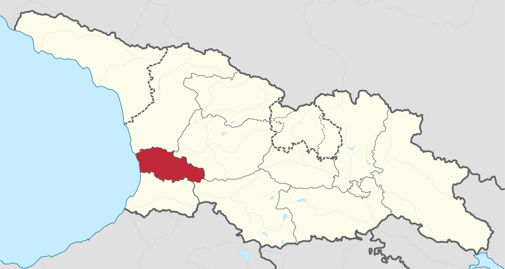
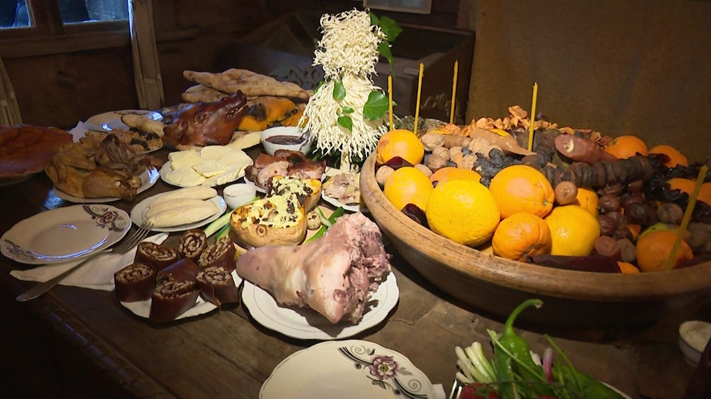

ახალი წელი გურიაში

გურიაში ახალი წლის პირველ დღეს „კალანდა“ ეწოდება და მას თოფების სროლით ეგებებიან.
ახალ წელს, მამლის ყივილზე, მთელი ოჯახი ფეხზე დგება. მამაკაცები ღორის თავს, ბასილას, საახალწლო გობს სანოვაგით დატვირთულს, მორთულ ჩიჩილაკს და ცარიელ ჩაფს იღებენ და მარნისკენ გაეშურებიან. მარანში შესვლისას, ოჯახის უფროსი ხმაამოუღებლად საახალწლო გობს მიწაზე დადგამს, ჩაფს ღვინით გაავსებს და დაჩოქილი წმინდა ბასილას ოჯახის ბედნიერებას შესთხოვს. ადესას ღვინით დალოცავს ქვეყანას და მშვიდობის სადღეგრძელოს იტყვის.

გურიაში, კალანდის წინადღით, მოჰქონდათ „ცხემლის“ (რცხილის) შეშა, რომელსაც თხილის ჯოხებსაც მოაყოლებდნენ ჩიჩილაკისთვის. ამ ჯოხებს ღადარში აცხელებდნენ და კარგად ალესილი დანით ისე თლიდნენ, რომ ბურბუშელა ჯოხზევე რჩებოდა და ეხვეოდა. შემდეგ ჯვრიან დასადგმელს უკეთებდნენ, წვერში ჯვარედინად თხილის ჯოხებს ჩაურჭობდნენ და რთავდნენ სუროს ტოტებით, ვაშლებით, საჩიჩილაკე ხაჭაპურებით, ტკბილეულითა და ვერცხლის ფულებით. აქვე ასეთი წესი სრულდებოდა: ოთხ ხაჭაპურს გიდელში ჩააწყობდნენ და გოგონას გაატანდნენ მარანში. იქიდან ვაჟი უნდა გამოსულიყო ღვინიანი დოქით და გოგონას შეხვედროდა. მათ შორის მოჩვენებითი ბრძოლა გაიმართებოდა დოქისა თუ ხაჭაპურის წასართმევად და მარანში შესატანად. თუ ბიჭი იმარჯვებდა, მაშინ ყურძნის უხვი მოსავალი იყო მოსალოდნელი, ხოლო თუ გოგონა იყოჩაღებდა — აბრეშუმის.